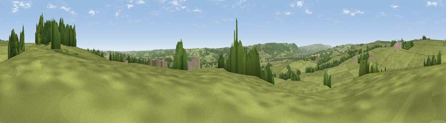

Viewpoint near Stainburn
#28211 in England · top 57% of its area beats it · near Stainburn · footpathWhere it is
The exact computed spot (SE 25925 48075). Click the marker for map links.
Public access: a public right of way passes within 8 m of this spot. Computed from Natural England's CRoW access layer and OpenStreetMap rights of way — not the legal definitive map. Always verify locally.
The view, rendered

A 360° render of this exact spot computed from the terrain model, tree cover and land cover — summer colours, afternoon light, calibrated against photographs of famous viewpoints. Real trees, hedges and buildings will differ in detail.
The panorama
Grey silhouette: terrain skyline in each direction (720 bearings, Earth curvature and refraction included). Dashed green: skyline with trees (+15 m) and buildings (+8 m) as obstacles. Blue strip: how far the ground is visible on each bearing.
Where the view opens
Wedge length = distance to the farthest visible ground on that bearing (vegetation-aware). Rings at 10, 25 and 50 km.
What fills the view
78% grassland · 15% woodland · 4% cropland · 2% built-up
Angular shares of the visible panorama (visual magnitude), not map area. Landscape diversity 0.30 (0–1 Shannon).
Key numbers
More beautiful places nearby
The staircase of upgrades: each row has a higher view potential than everything closer. Driving times are estimates from straight-line distance, calibrated against real road routing — check an actual route before setting out.
| Place | Direction | Drive | Score |
|---|---|---|---|
| Viewpoint near North Rigton | NE · 1 km | ~4 min | 66.6 |
| Viewpoint near Timble | NW · 6 km | ~13 min | 68.1 |
| Surprise View | SW · 7 km | ~14 min | 69.3 |
| Viewpoint near Otley | WSW · 7 km | ~14 min | 77.5 |
| Viewpoint near East Witton | NNW · 39 km | ~58 min | 77.8 |
| Hood Hill | NE · 41 km | ~61 min | 79.6 |
| Viewpoint near Thirlby | NE · 43 km | ~63 min | 81.5 |
| Beacon Hill | NNE · 55 km | ~77 min | 84.7 |
53.92816, -1.60667 · source: screening · position refined by local search. Computed location — check access rights before visiting.